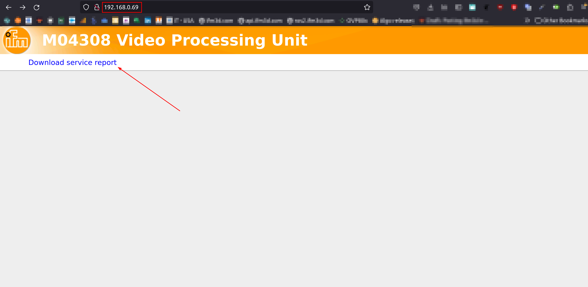

Service report
The service report contains all the logs necessary for troubleshooting issues with the O3R platform: the JSON configuration of the device and JSON schema, the diagnostic messages and some additional internal logs.
Make sure to share the downloaded service report archive to the ifm support team when working together to resolve an issue.
Download from a browser
To download the service report, connect to the current IP address of the device in a browser and click on the download link: 
Download using curl
You can also download the service report from a terminal using curl:
$ curl -JO http://192.168.0.69/service_report/
% Total % Received % Xferd Average Speed Time Time Time Current
Dload Upload Total Spent Left Speed
100 179k 0 179k 0 0 402k 0 --:--:-- --:--:-- --:--:-- 403k